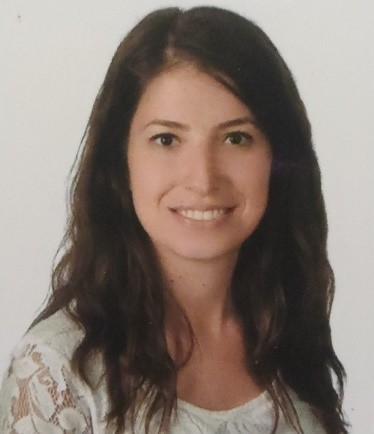

Tevfikbey mah. Karcıkent sok. No:9/8 Sefaköy KÜÇÜKÇEKMECE – İSTANBUL

5353526795
bdemir05@gmail.com
BERNA KASALAK
ÇALIŞMA DENEYİMİ
02.02.2014- Halen Kod Kontrol Yaygınlaştırma ve İzleme - Ziraat Teknoloji - Yönetmen
Monitoring ekibinin kurulmasıyla birlikte çeşitli toolların kurulum, upgrade, konfigürasyon çalışmalarının yapılması ve süreçlerinin oluşturulması, servis bazlı izleme yapısının oluşturulması, sorun analizlerinde destek olunması, yeni alınacak toolların poc çalışmalarının yapılması aşamalarında yer aldım.
- Microfocus Sitescope(ajansız izleme toolu) ile bütün sunucu kaynakları, uygulama, servis, log vb. monitörlerin ve alarmlarının tanımlarının yapılması.
- Çeşitli kurum webservislerinin çalışırlığını test etmek için vugen ile test oluşturularak microfocus bpm (sentetik transaction) senaryoları oluşturulması.
- Microfocus RUM(real user monitor) ile mobil, internet, ana bankacılık uygulamasının monitör edilmesi çalışmaları.
- Microfocus BSM tarafında servis ağaç modellemeleri ve çeşitli dashboardlar hazırlamak(event management).
- Ucmdb ile konfigürasyon yönetimi, service modelleme, rapor çekme çalışmaları.
- Riverbed Appresponse ve portal yönetimi. Portalde de çeşitli dashboardlar hazırlanması, appresponseda uygulamaları izlemek için gerekli tanımların, alarmların vs. yapılması, gerektiğinde sorun analizinde destek olunması.
- Splunk ile merkezi log projesi için POC çalışmaları yapılması.
- RedHat Ansible Tower ve Cloudforms POC çalışmaları. Çalışma kapsamında firma ile VM provizyonlama konusunda çalışıldı. Ansible tower tarafında sitescope için monitör tanımlama otomasyonu yapıldı.
- Grafana, Prometheus, logstash, influxdb kurulumu ve entegrasyonlarının yapılması. Logstash kullanarak oracle dbden veri çekilmesi, appresponsedan data çekilmesi ve logstash ve filebeat ile sitescope logları okunarak metrikleri influxdbye yazma.
- Prometheus için exporter ile linux ve windows sunucudan metrik çekme.
- APM(Application Performance Monitoring) çalışmaları kapsamında appdynamics, instana, dyntrace ile POC çalışmaları yapılması. --devam ediyor
18.06.2012- 02.02.2014 BT Mimari ve ARGE- Ziraat Teknoloji - Uzman Yardımcısı
- Teknik Gereksinim Analizi, Teknik şartname, ARGE çalışmaları, Mimari çalışmalar.
- Tool seçimleri ve satın alım yapılacak ürünlerle alakalı teknik gereksinim analizi ve araştırma yapmak. Bunlarla ilgili çeşitli dökümanlar hazırlamak.
- Değişiklik yönetimi toplantılarını organize etmek ve süreç işlerinde yer almak.
- Konfigürasyon Yönetimi dahilinde veri merkezinde envanter denetimi yapmak.
UZMANLIK VE BECERILER
MF OBM, MF Sitescope, MF APM, MF BPM, MF uCMDB, MF Openview, MF RUM, Riverbed Appresponse, Riverbed Portal, Grafana, Logstash, Influxdb, Prometheus, Splunk, Ansible.
AKADEMİK GEÇMİŞ
- Eylül 2008- Eylül 2012 İstanbul Üniversitesi (Lisans) MÜHENDİSLİK, Bilgisayar Mühendisliği - Çift Anadal 3,23
- Eylül 2007- Haziran 2011 İstanbul Üniversitesi (Lisans) MÜHENDİSLİK, Endüstri Mühendisliği -Bölüm Birinciliği 3,73
YABANCI DİLLER
İngilizce, İyi